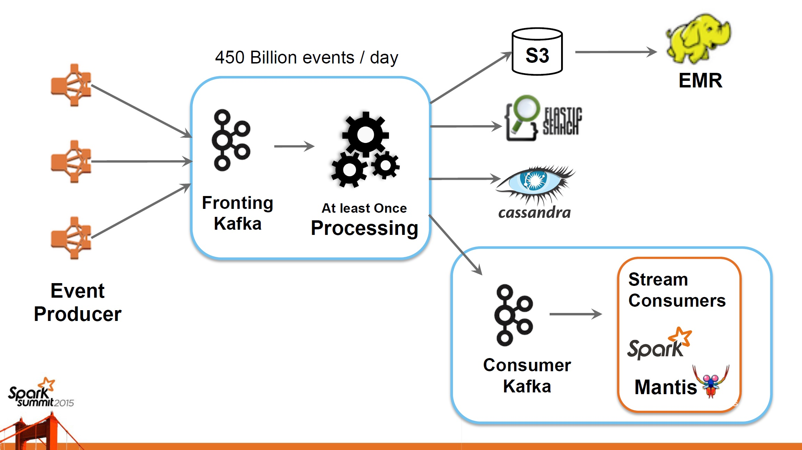

Networking Data
Data, Networking, Insight ?
Created by 이영석 (http://yslee.cs-cnu.org)
Data ? Networking?
“Data is raw, , preprocessed, engineered for analysis to achieve better product ! .” by Youngseok Lee
데이터 혁신한 경우는??
- 검색의 Google (Altavista, Yahoo!, ...)
- 친구의 Facebook (MySpace, 싸이월드 )
- 쇼핑의 Amazon (토이저러스, 보더스, 반스앤노블 )
- 영화의 Netlix (블럭버스터)
- 음악의 Spotify
숙제: 100 TB 정렬을 가장 빨리 하는 사람은 A+ !
- 무슨 알고리즘을 쓸까?
- 현실적인 문제: 100 TB 저장 ? 메모리 ? ...
바이트?
1 Terabyte (TB) = ? GB
1 Petabyte (PB) = ? TB
1 Exabyte (EB) = ? PB
Zetta, Yotta, ...
데이터를 잘 다루는 회사는 ?
Google, Facebook, Amazon, MS, Netflix, Walmart, eBay, ...
Alibaba, Baidu, ...
데이터 다루는 핵심 기술은 ?
- 데이터 수집: Apache Flume, Apache Kafka
- 분석알고리즘: 추천, 예측 (data mining/machine learning)
- 분산컴퓨팅 SW 플랫폼: MapReduce, Hadoop, Spark, ...)
-
분석알고리즘 + SW 플랫폼 -> 문제해결
Example: Web Search
Example: Recommendation
Netflix Prize

Big Data by Definition
“ Data sets whose size is beyond the ability of commonly used software tools to capture, manage, and process the data within a tolerable elapsed time. ”
Architecture of Big Data
- In 2004, Google's MapReduce
- In 2006, Doug Cutting's Hadoop
- In 2009, Matei Zaharia's Spark
Big Data Echosystem
Hadoop
- Open-source framework for running applications on large clusters built of commodity hardware
- Implementation of MapReduce and HDFS

Apache Hadoop
- MapReduce: a distributed data processing model and execution environmnet that runs on large clusters of commodity machines
- HDFS: a distributed filesystem that runs of large clusters of commodity machines
MapReduce
- Published by J. Dean and S. Ghemawat, MapReduce: Simplified Data Processing on Large Cluster, OSDI, 2004
MapReduce: Code
function map(String name, String document):
// name: document name
// document: document contents
for each word w in document:
emit (w, 1)
function reduce(String word, Iterator partialCounts):
// word: a word
// partialCounts: a list of aggregated partial counts
sum = 0
for each pc in partialCounts:
sum += pc
emit (word, sum)
Data Mind

By w:Florence Nightingale (1820?1910). - http://www.royal.gov.uk/output/Page3943.asp, Public Domain, https://commons.wikimedia.org/w/index.php?curid=1474443
DNLAB Networking Data
DNLAB's GitHub Project
DNLAB WordCloud
Interested in Networking Data ?
- 데이터분석: 컴퓨터공학 + 통계학 (데이터마이닝, 머신러닝, 딥러닝)
- 데이터엔지니어링: Small data부터 시작 (LAMP), Hadoop/Hive/Spark + Python scikit + R + Tensorflow ... (SMAQ)
- 컴퓨터공학 기반을 갖춘 데이터 네트워크 엔지니어가 됩시다 !